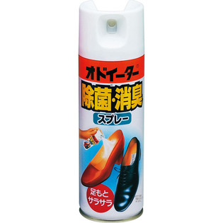

返回列表
产品名称：オドイーター 除菌・消臭スプレー

小林製薬 オドイーター 除菌・消臭スプレー １５０ｍｌ
メーカー 小林製薬
JANコード 4987072690000
商品の特徴
○アルコールベースのドライスプレーなのでべた付かず、足元をサラサラに保つ。
○靴特有の強い悪臭を中和する。
○ニオイの原因となる雑菌を追求し、靴の中を清潔に保つ。
成分・分量
脂肪酸塩系消臭剤 有機系除菌剤 香料 エタノール
用法及び用量
上下によくふってからお使いください。
10cm位離して靴の中にスプレーしてください。（靴の外側には噴射しないでください。）
1回2秒の噴射で約110回ご使用いただけます。